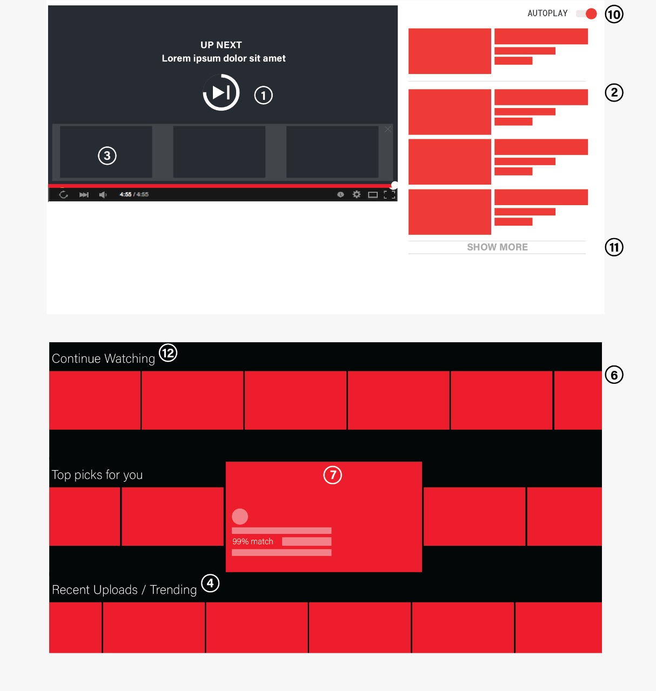

Designing for digital well-being
Design proposals for exploring digital well-being.
Stakeholders - Designers of video-streaming platforms.
Sustainable design
Binge-watching has become an ever-increasing addiction with the availability of easy internet access and ubiquitous computing. Data consumption has drastically increasing specifically because of this reason. The side effects of such an addiction vary from various physiological effects such as blurry eyes, increased heart attack chances to psychological effects such as anxiety, depression etc.. With the content getting more and more compelling each day, content producers releasing all episodes all at once for one to binge and algorithms reinforcing the likes and desires of users, we wanted to explore if the design of UI elements had an effect on enhancing binge-watching among the other known factors.
The study involved three stages.
- An exploratory study to confirm the hypothesis that UI of video streaming apps is responsible for aggravating the binge-watching behaviour.
- A semi structured open ended interview to reveal novel insights on the interface elements.
- Characterization of dark patterns related to video watching.
- Design proposals on YouTube for incorporating digital well-being
General survey
A general exploratory survey through questionnaires was conducted by asking 180 participants about their viewing behaviour. The questions were a mix of objective, likert scale rating based and subjective type seeking self-reporting of participants on their viewing behaviour. A correlation was drawn on the factors promoting binge-watching like content, UI of the streaming platform, psychological factors, contextual factors, social factors etc. with the negative feelings of guilt, anxiety etc. usually followed at the end of a binge-watching session. Around 75 % participants agreed that UI plays at least some part in augmenting the binge-watching behaviour.
Empirical observations

We conducted a semi structured open ended interview to find out detailed insights on the exact triggers in UI that cause a person to watch more than recommended. The questions were regarding the UI elements on YouTube and Netflix. The users were either asked or shown the exact UI design instance and asked to reflect on their experiences of binge-watching while doing so. The study revealed that features like autoplay, animated thumbnails on hover, recommendations, trending, infinite scroll, skip credits, skip intro, though useful initially, with time induce negative cycles of compulsion by taking away the user autonomy, increasing the fear of missing out, enhancing choice paralysis ..
Dark patterns
.png) A dark pattern, coined by Harry Brignull in 2010, is defined as
"a user interface that has been carefully crafted to trick users
into doing things... they are not mistakes, they are carefully
crafted with a solid understanding of human psychology, and
do not have the user’s interests in mind". We found out that there was a lot of scope to recognise dark patterns in product designs, especially as seen from the end-user
behavior in practice. Following in the works of previous activists like Harry Brignull who coined the term dark patterns, we introduced a definition of dark patterns as seen from the perspective of long term behaviour in terms of video watching. We propose that while these features are useful, these features ought to have safeguard measures in long term from a user-centric design philosophy or they should be classified as dark.
We presented
a grave concern for the current state of design of these online platforms as themes like unawareness etc., which were qualities of the user’s
psychological states or behaviors, led them towards a negative or guilt-laden experience. In the short-term, users enjoy
the benefits of convenience, ease of access, and compelling
design of the display. However, as participants continually
mentioned, the long-term effects are mostly ill because of the
negative dependencies created by such designs.
A dark pattern, coined by Harry Brignull in 2010, is defined as
"a user interface that has been carefully crafted to trick users
into doing things... they are not mistakes, they are carefully
crafted with a solid understanding of human psychology, and
do not have the user’s interests in mind". We found out that there was a lot of scope to recognise dark patterns in product designs, especially as seen from the end-user
behavior in practice. Following in the works of previous activists like Harry Brignull who coined the term dark patterns, we introduced a definition of dark patterns as seen from the perspective of long term behaviour in terms of video watching. We propose that while these features are useful, these features ought to have safeguard measures in long term from a user-centric design philosophy or they should be classified as dark.
We presented
a grave concern for the current state of design of these online platforms as themes like unawareness etc., which were qualities of the user’s
psychological states or behaviors, led them towards a negative or guilt-laden experience. In the short-term, users enjoy
the benefits of convenience, ease of access, and compelling
design of the display. However, as participants continually
mentioned, the long-term effects are mostly ill because of the
negative dependencies created by such designs.
Design proposals on YouTube
Following from the previous studies, we realized the need to propose design proposals and hence, used YouTube as an example to show how digital well-being can be accommodated in UI design on video streaming platforms. We defined seven strategies from design feature analysis of previous study, factors promoting binge-watching and workaround solutions suggested currently employed by users to achieve digital well-being. Each of these seven strategy instances were shown and designed with minimal intrusion to the existing design features of YouTube.
Quote
Clearly, one can't deny that autoplay is useful, but it does take away the time from you to think what to watch next or whether to watch or not, and when it just starts, you just give in to the choice made for you.
I worked on this project with Kyzyl Monteiro (undergraduate researcher at Weave Lab) and Jaivrat Saroha (intern at Weave Lab). Kyzyl was responsible for providing hands-on coding and designing various image proposals. Jaivrat was responsible for providing assistive literature review on the work. Dr. Aman Parnami was the advisor for the work.
My responsibilities
- I was the team lead for the project.
- I was directly responsible for managing the two interns working with me on the project.
- I designed the initial exploratory questionnaire to decide the hypothesis of the project, which was that UI design of video streaming platforms plays a role in promoting binge-watching.
- I, along with the team members, was responsible for analyzing the data from the exploratory questionnaire.
- I designed all the user studies after consultation with fellow team members and Dr. Aman Parnami, the project advisor.
- I read psychology related studies to draft the questions and protocol of the open-ended interview.
- I, along with the team members, was responsible for transcribing the interviews and coming up with convergent themes.
- I, along with the team members, designed UI proposals, keeping in mind the existing state of system level and app level access to information in mobile devices.
- I was responsible for giving an ethic-oriented direction to the research paper after doing an extensive observation study on the existing dark patterns in various artifacts as well as reading dark patterns related research papers.